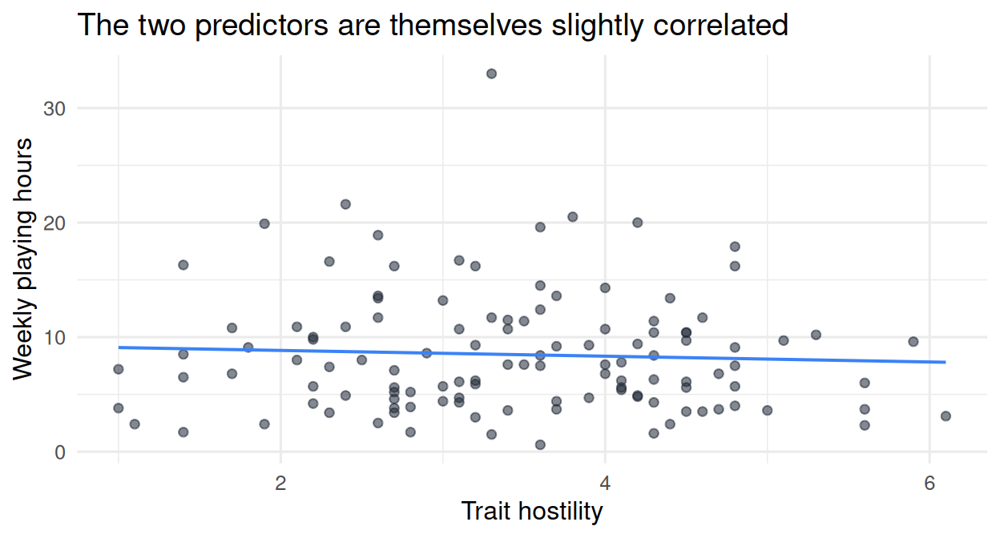
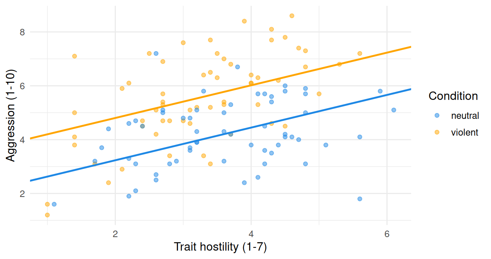

The simple linear model from Chapters 15 and 16 used a single continuous predictor. Real research questions usually involve more than one. We may want to predict aggression from gaming hours and trait hostility simultaneously. We may also want to use a categorical predictor (which experimental condition each participant was in), not just continuous ones.
This chapter extends the simple linear model in two directions:
Multiple regression: more than one predictor in the same model. Each slope reports the effect of its predictor holding the others constant.
Categorical predictors: how a category (like condition) enters the regression equation as a 0/1 dummy variable; why the slope of that dummy is the difference between two group means; and why a t-test is a regression with one dummy predictor.
The framework is the same as in Chapters 15 and 16. The model still has the form outcome = intercept + slopes × predictors + residual. The way we fit it (lm()), interpret the coefficients, and judge fit (R-squared) is also the same. The only new thing is that the equation has more terms.
Now the equation has three coefficients: the intercept \(b_0\), the slope of hours \(b_1\), and the slope of hostility \(b_2\). Geometrically, the line of Chapter 15 has become a plane in three dimensions (one for each predictor, plus the outcome). We do not need to visualize the plane to use the model; the equation is enough.
To fit the model in R, you list the predictors with +:
model_multi <-lm(aggression ~ hours_weekly + trait_hostility, data = data)summary(model_multi)
Call:
lm(formula = aggression ~ hours_weekly + trait_hostility, data = data)
Residuals:
Min 1Q Median 3Q Max
-3.7856 -1.0379 0.0504 0.9148 3.3668
Coefficients:
Estimate Std. Error t value Pr(>|t|)
(Intercept) 2.38146 0.49156 4.845 3.92e-06 ***
hours_weekly 0.08743 0.02530 3.456 0.000764 ***
trait_hostility 0.51439 0.11966 4.299 3.57e-05 ***
---
Signif. codes: 0 '***' 0.001 '**' 0.01 '*' 0.05 '.' 0.1 ' ' 1
Residual standard error: 1.452 on 117 degrees of freedom
Multiple R-squared: 0.1982, Adjusted R-squared: 0.1845
F-statistic: 14.46 on 2 and 117 DF, p-value: 2.437e-06
The Coefficients block now has three rows: the intercept and the two slopes. Read only the Estimate column for this chapter (the others, again, belong to inference).
(Intercept) Estimate ≈ 2.38. The predicted aggression for someone with hours_weekly = 0andtrait_hostility = 0. As before, the intercept is the prediction when every predictor takes the value zero; it may or may not have substantive meaning depending on whether zero is a plausible value for each predictor.
hours_weekly Estimate ≈ 0.09. Each additional hour of weekly gaming is associated with a 0.09-point increase in aggression, holding trait hostility constant.
trait_hostility Estimate ≈ 0.51. Each one-point increase in trait hostility is associated with a 0.51-point increase in aggression, holding gaming hours constant.
Multiple R-squared ≈ 0.20. Together, the two predictors explain about 20 percent of the variability in aggression.
17.2.1 What “holding constant” means
The phrase “holding [the other predictors] constant” is essential to interpreting multiple regression and worth understanding well.
In Chapter 16, the slope of hours_weekly (in a one-predictor model) was 0.08. In the multiple-regression model, the slope of hours_weekly is 0.09. The numbers differ slightly. The interpretation also differs in a subtle but important way.
In simple regression, the 0.08 slope describes the relationship between hours and aggression in the dataset, period. People who play more hours tend to be more aggressive by 0.08 points per hour on average; some of that association may be because heavy gamers also tend to have higher hostility, which is itself associated with aggression.
In multiple regression, the 0.09 slope describes the relationship between hours and aggression among people with the same trait hostility. The model has effectively asked: if I compare two participants who have identical trait hostility but who differ by one hour in weekly gaming, how much higher is the heavier gamer’s predicted aggression? The answer is 0.09 points.
This is what makes multiple regression more useful than running several simple regressions side by side. The slope of each predictor in a multiple regression is its unique contribution, after the model has accounted for what the other predictors do.
17.2.2 A note on overlapping predictors
The model’s overall R-squared (0.20) is more than each predictor alone but less than the sum of their simple-regression R-squareds (7.2 percent for hours alone, 11.6 percent for hostility alone; together that would be 18.8 percent if they were independent, but the joint R-squared is 19.8 percent, close but not the same). The arithmetic does not simply add up because the two predictors are themselves correlated. Some of the variance that hours_weekly “explains” overlaps with what trait_hostility “explains.” Multiple regression apportions the overlapping variance carefully so that no piece is double-counted.

The picture above shows that participants higher on trait hostility also tend to play slightly more hours of video games. This overlap is what the “holding constant” interpretation deals with. Predictors that are very strongly correlated produce a problem called multicollinearity, which makes the individual slopes unstable; we will return to it in detail in Chapter 20.
17.3 Adding more predictors
The same logic extends to any number of predictors. With three predictors,
each slope is the effect of its predictor holding the other two constant. Adding a predictor (in R, use + to list it in the formula) typically increases R-squared, because the model has more flexibility to fit the data. Whether the increase is meaningful or just noise is a question we will return to in Chapter 19, where adjusted R-squared and the bias-variance trade-off enter.
For the moment, the practical recipe is straightforward. To add a third predictor (say, empathy):
Call:
lm(formula = aggression ~ hours_weekly + trait_hostility + empathy,
data = data)
Residuals:
Min 1Q Median 3Q Max
-3.8470 -1.1054 0.0579 0.8930 3.3007
Coefficients:
Estimate Std. Error t value Pr(>|t|)
(Intercept) 3.11387 1.23188 2.528 0.012825 *
hours_weekly 0.08923 0.02551 3.498 0.000666 ***
trait_hostility 0.44857 0.15711 2.855 0.005096 **
empathy -0.11036 0.17012 -0.649 0.517806
---
Signif. codes: 0 '***' 0.001 '**' 0.01 '*' 0.05 '.' 0.1 ' ' 1
Residual standard error: 1.456 on 116 degrees of freedom
Multiple R-squared: 0.2011, Adjusted R-squared: 0.1805
F-statistic: 9.735 on 3 and 116 DF, p-value: 8.836e-06
Same output structure: four coefficients (intercept + three slopes), one R-squared. Each slope is interpreted holding the other predictors constant.
17.4 Categorical predictors
So far every predictor we have used has been continuous (numbers). What about a categorical variable like condition ("violent" or "neutral") or gender ("man", "woman", "non-binary")? You cannot multiply a coefficient by "violent" and expect a number.
R handles this for you behind the scenes. When you put a character vector or a factor into the regression formula, R automatically converts it into one or more dummy variables: numeric 0/1 indicators for category membership.
For a two-level categorical variable like condition, R creates one dummy:
conditionviolent = 0 if the participant is in the neutral condition (the reference category).
conditionviolent = 1 if the participant is in the violent condition.
The reference category is the one R picks alphabetically by default, unless you tell it otherwise using the factor tools from Chapter 11 (fct_relevel and friends).
The regression equation with a single dummy predictor is
For a neutral participant (conditionviolent = 0), the prediction is \(b_0\). For a violent participant (conditionviolent = 1), the prediction is \(b_0 + b_1\). So \(b_1\) is the difference between the two predicted values: violent minus neutral.
In R:
model_cat <-lm(aggression ~ condition, data = data)summary(model_cat)
Call:
lm(formula = aggression ~ condition, data = data)
Residuals:
Min 1Q Median 3Q Max
-4.3650 -0.9650 -0.0617 1.1000 3.0350
Coefficients:
Estimate Std. Error t value Pr(>|t|)
(Intercept) 4.2117 0.1890 22.288 < 2e-16 ***
conditionviolent 1.3533 0.2672 5.064 1.53e-06 ***
---
Signif. codes: 0 '***' 0.001 '**' 0.01 '*' 0.05 '.' 0.1 ' ' 1
Residual standard error: 1.464 on 118 degrees of freedom
Multiple R-squared: 0.1785, Adjusted R-squared: 0.1716
F-statistic: 25.65 on 1 and 118 DF, p-value: 1.53e-06
Reading the output:
(Intercept) ≈ 4.21. The predicted aggression in the neutral condition (where the dummy is 0). This is the mean of the neutral group.
conditionviolent ≈ 1.35. The difference in predicted aggression between violent and neutral. The mean of the violent group is therefore \(4.21 + 1.35 = 5.56\).
Verify against the direct group means you computed in earlier chapters:
data |>group_by(condition) |>summarize(mean_aggression =mean(aggression))
The numbers match: the regression with a dummy predictor is doing the same arithmetic as comparing two group means.
17.4.1 A t-test is a regression
This equivalence is not a coincidence. In a classical Student t-test, you compare two group means and ask whether their difference is meaningful. In a regression with one dummy predictor, the slope of the dummy is the difference between the two group means. The two analyses report the same quantity, by construction. We will return to the t-test as a special case of regression in a later section; for now, the point is that “group comparison” and “regression with a categorical predictor” are not separate techniques.
17.4.2 Categorical variables with more than two levels
gender has three levels ("man", "woman", "non-binary"). When you put it in the formula, R creates two dummies (one fewer than the number of levels), each indicating membership in one non-reference category. Suppose man is the reference category (alphabetical default). Then R creates:
gendernon-binary = 1 if the participant is non-binary, else 0.
genderwoman = 1 if the participant is a woman, else 0.
(Participants who are men have both dummies equal to 0.)
\(b_0\) is the predicted outcome for the reference group (men).
\(b_1\) is the difference between non-binary and men.
\(b_2\) is the difference between women and men.
The general rule: a categorical variable with \(k\) levels enters the regression as \(k - 1\) dummies, each contrast against the reference. If you want a different reference group, change the factor’s reference level with fct_relevel() (Chapter 11), then refit the model.
17.5 Combining continuous and categorical predictors
The whole point of multiple regression is that you can mix and match. To fit a model that uses both trait_hostility (continuous) and condition (categorical):
model_mixed <-lm(aggression ~ trait_hostility + condition, data = data)summary(model_mixed)
Call:
lm(formula = aggression ~ trait_hostility + condition, data = data)
Residuals:
Min 1Q Median 3Q Max
-3.6179 -0.8719 -0.0579 0.9682 3.6021
Coefficients:
Estimate Std. Error t value Pr(>|t|)
(Intercept) 2.0205 0.4282 4.719 6.63e-06 ***
trait_hostility 0.6067 0.1090 5.568 1.67e-07 ***
conditionviolent 1.5707 0.2418 6.496 2.09e-09 ***
---
Signif. codes: 0 '***' 0.001 '**' 0.01 '*' 0.05 '.' 0.1 ' ' 1
Residual standard error: 1.307 on 117 degrees of freedom
Multiple R-squared: 0.3506, Adjusted R-squared: 0.3395
F-statistic: 31.58 on 2 and 117 DF, p-value: 1.077e-11
This model has three coefficients: the intercept, the slope of trait_hostility, and the slope of conditionviolent. Each is interpreted holding the others constant.
(Intercept) is the predicted aggression for a participant in the neutral condition with trait_hostility = 0.
trait_hostility is the effect of hostility, holding condition constant.
conditionviolent is the effect of being in the violent condition, holding trait hostility constant.
The model fits a separate line for each condition, but it forces the two lines to have the same slope (only the intercepts differ between conditions). When we get to Chapter 18 (moderation), we will let the slope itself differ between conditions.

The two parallel lines are what this model predicts: the same slope for both conditions, but one line sitting above the other. Notice that the violent condition’s line is higher than the neutral condition’s line, by exactly the value of the conditionviolent coefficient.
17.6 Looking ahead
The pattern of every chapter so far in Section 3 has been the same: fit a model, read the coefficients, judge the fit, recall that we are still in modeling and not in inference. The chapters have differed only in the structure of the model:
Chapter 14: one number for everyone (the mean).
Chapters 15-16: one continuous predictor (a line).
Chapter 17: multiple predictors (a plane or hyperplane); each slope is “holding constant” all the others; categorical predictors enter as dummies; a t-test is a special case.
Chapter 18 adds one more piece: moderation (also called interaction), where the effect of one predictor depends on the value of another. The change to the equation is small (one extra term, written as a product), but the interpretation requires care.
17.7 Check your understanding
1. What does the slope of a predictor in a multiple regression represent?
2. What is the difference between multiple regression and running several simple regressions side by side?
3. How does R handle a categorical variable in a regression formula?
4. In lm(aggression ~ condition, data = data), the row labeled conditionviolent has an Estimate of about 1.35. What does this number represent?
5. What is a t-test, expressed in the language of regression?
6. How many dummy variables does a categorical predictor with three levels (e.g., gender with man, woman, non-binary) generate in a regression model?
7. What happens to R-squared when you add a predictor to a regression model?
8. The model lm(aggression ~ trait_hostility + condition, data = data) is fitted on the video-games data. What does its prediction look like graphically (with trait_hostility on the x-axis and aggression on the y-axis, and condition shown by color)?
17.8 References
Navarro, D. J. (2018). Learning statistics with R: A tutorial for psychology students and other beginners (Version 0.6), Chapters 13-15. https://learningstatisticswithr.com